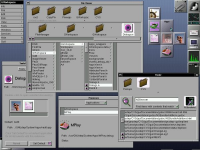

The GNUstep Project
GNUstep provides an Object-Oriented application development framework and tool set for use on a wide variety of computer platforms. GNUstep is based on the original OpenStep specification provided by NeXT, Inc. (now Apple).

GNUstep is becoming more and more stable every day and is used in a production environment by several companies. Feel free to browse this site to find out more about GNUstep and what it can offer.
Now available
The latest GNUstep packages available for download are GNUstep-gui 0.8.5, GNustep-back 0.8.5, GNUstep-base 1.6.0 and GNUstep-make 1.6.0. The packages are available in source form as well as compiled for various targets.
Recent News
- Skyrix-core-42 release (Apr 02)
- Gorm-0.2.6 release (Mar 05)
- ProjectCenter-0.3.2 release (Mar 01)
- GNUstep Development Environment 0.4.1 for Windows (Feb 25)
- gnustep-objc-1.2.3 release (Feb 25)
Mirror sites
- Main
- North America - GNU.org
- France
- Australia
- More mirrors... (look in software/gnustep subdir)
 Contact:
webmasters@gnustep.org
Contact:
webmasters@gnustep.org